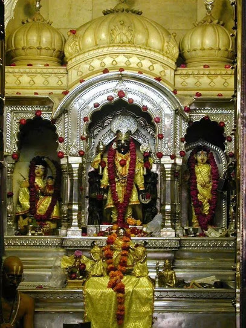

इस मंदिर का निर्माण महाराजा श्री दौलतरावजी सिंधिया की महारानी बायजाबाई द्वारा लगभग 250 वर्ष पहले कराया गया था।
नगर के मध्य स्थित इस मंदिर में द्वारकाधीश की अत्यंत मनोहारी मूर्ति है।
मंदिर के गर्भगृह में लगा रत्नजड़ित द्वार श्रीमंत सिंधिया ने गजनी से प्राप्त किया था,
जो सोमनाथ मंदिर की लूट के साथ ही वहां पहुंच गया था। इस भव्य मंदिर का शिखर सफेद संगमरमर से एवं शेष भाग सुंदर काले पत्थरों से निर्मित है।
मंदिर का प्रांगण तथा परिक्रमा पथ भव्य और विशाल है।

जन्माष्टमी के अवसर पर यहां पर विशेष आयोजन किया जाता है। वैकुंठ चौदस के दिन महाकाल की सवारी मध्यरात्रि के समय हरि-हर मिलन हेतु यहां पर पधारती है
एवं भस्मपूजन के समय श्री गोपालकृष्ण की सवारी महाकालेश्वर पहुंचती है तथा वहां पर उन्हें तुलसी-दल अर्पित किया जाता है।
ऐसा अद्वितीय संयोग अन्यत्र कहीं पर भी उपलब्ध नहीं है। इस मंदिर में प्रवचन, भजन एवं कीर्तन के कार्यक्रम सदैव चलते रहते हैं
तथा यहां का वातावरण अनवरत भक्तिमय बना रहता है।